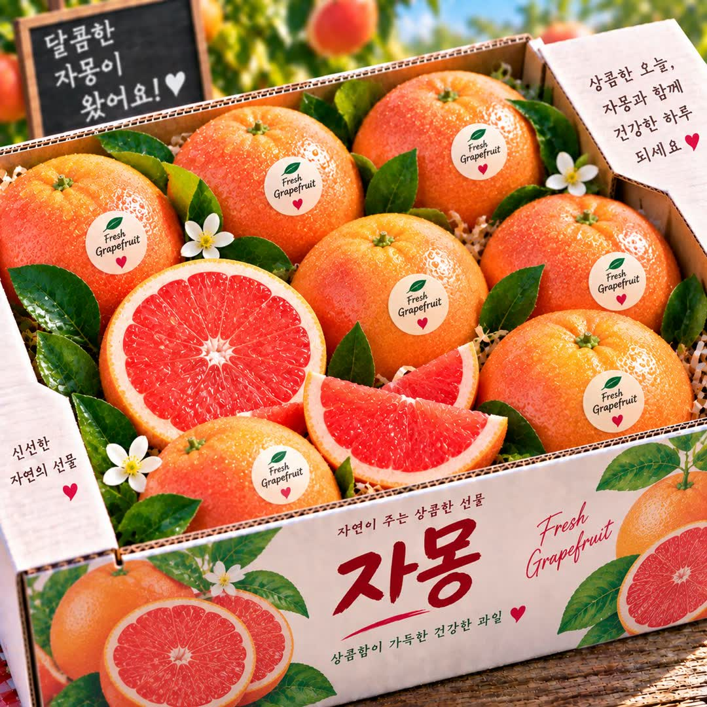
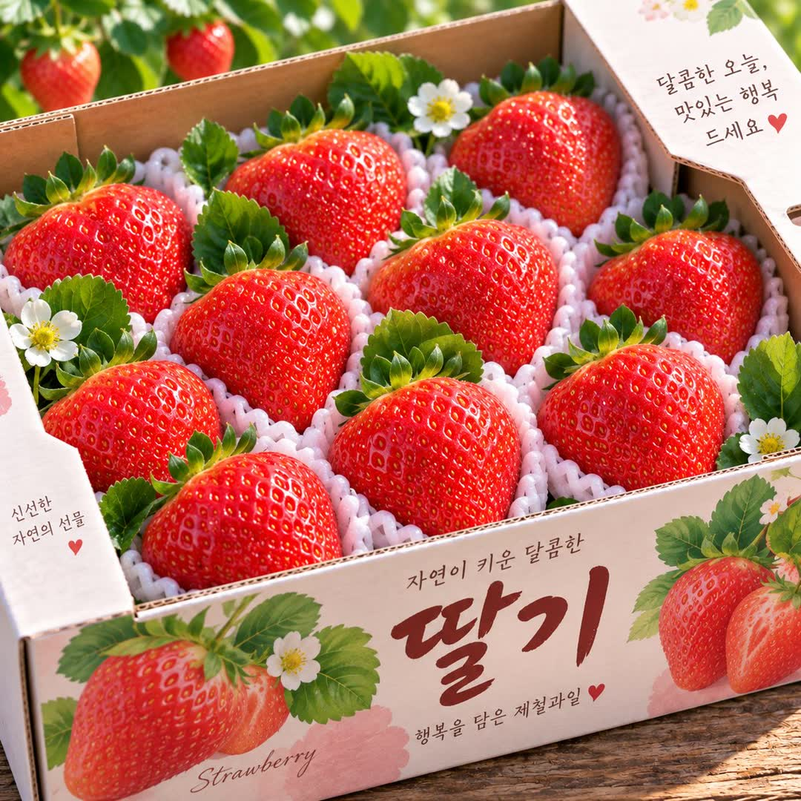
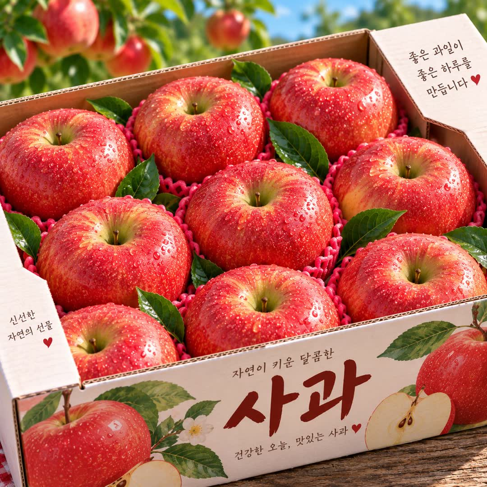
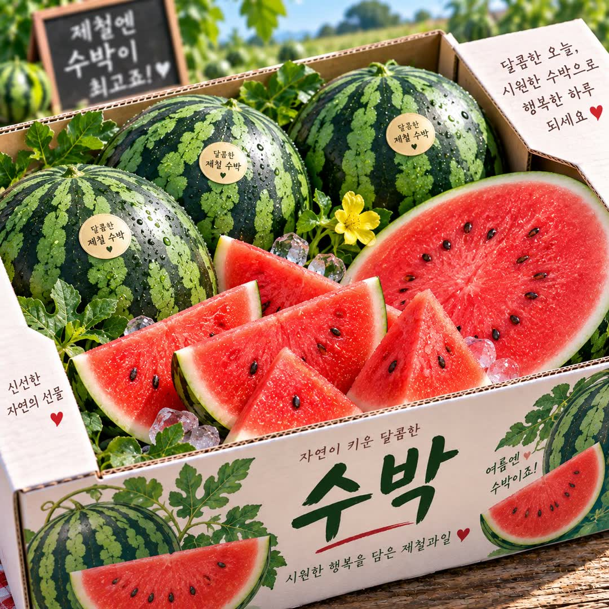

?
마트 과일,
맛이 매번
복불복
이셨죠?
달까? 실까? 고를 때마다 고민…
그럼
과일철이네
2
!

오늘도
과일철이네
가족에게 드리는 마음으로, 좋은 과일만 정성껏

POINT 01
신선도 최우선!
그날그날 들어온 과일을
직접 보고 고릅니다
POINT 02
당도 꼼꼼 체크!
먹어보고 맛있는 과일만
권해드립니다
POINT 03
정성 가득 포장!
선물용은 물론, 집에서 드실 과일도
꼼꼼하게 포장합니다
오늘은 어떤 과일 드실래요?
제철 과일
20
종
선물용 과일세트도 정성껏 준비해요

오늘 저녁 식탁에, 소중한 분께 드릴 선물로
지금 바로
과일철이네2
를
만나보세요!
동네 배달
20,000원 이상 주문 시
배달 지역
성남 구시가지 · 위례 · 야탑
영업 시간
08:00 ~ 19:00
전화 문의
010-2237-3494
카카오톡으로 1:1 주문·상담
경기 성남시 수정구 산성대로334번길 1, 1층